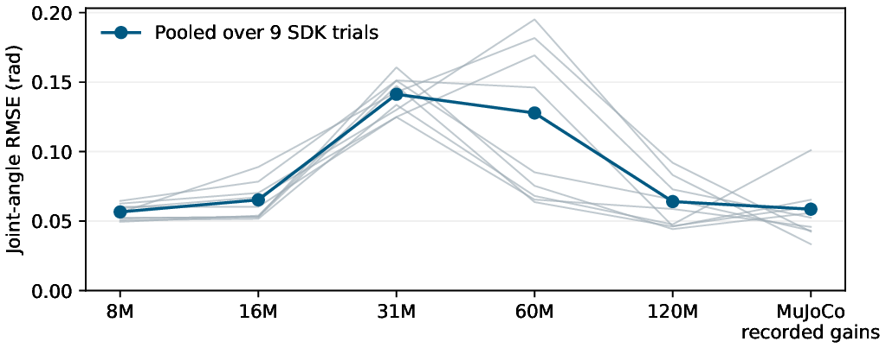

Scaling Quadruped World Models
How well can a world model predict a quadruped’s next three seconds from its recent motion and joint commands?
Predicting the next doubling
Five model sizes and four training budgets yield 20 checkpoints. With the largest budget at each width withheld, the fitted law predicts three-second endpoint error with 2.9% mean relative discrepancy. Carrying the preceding scores forward gives 7.4%.
L3s = 0.202 + 0.00775n−0.863 + 0.229d−0.246
Here n is size in units of 30M per-step parameters and d is exposure in billions of sampled transitions. The fit uses recorded terrain scans in simulation.

Replaying the robot’s commands
The stock controller runs on the real robot once. Each predictor receives its published joint targets, and the encoders and IMU supply the reference. Across nine default-mode runs, the smallest adapted model has the lowest pooled joint-angle error. The ordering changes on the four faster walks.
| Predictor | Nine SDK runs | Four at 0.5 m/s |
|---|---|---|
| 8M adapted | 0.0566 | 0.0512 |
| 120M adapted | 0.0641 | 0.0461 |
| MuJoCo, recorded gains | 0.0586 | 0.0729 |


On the filmed walk above, the stationary foot-contact centroid moved an estimated 2.335 m on the two-foot grid. Settled onboard odometry was 2.035 m. The measurements refer to different points on the robot.
Both clips are silent. Each records one acknowledged SDK mode request. Independent footfall classification was unavailable.
Eight gaits in simulation
MuJoCo and the T2 policy supply a three-second reference for each gait. The adapted 120M model receives the joint targets from that same trajectory. Trot gives a mean body-up error of 0.52°. In pronk, the simulator overturns and the error reaches 69.52°.